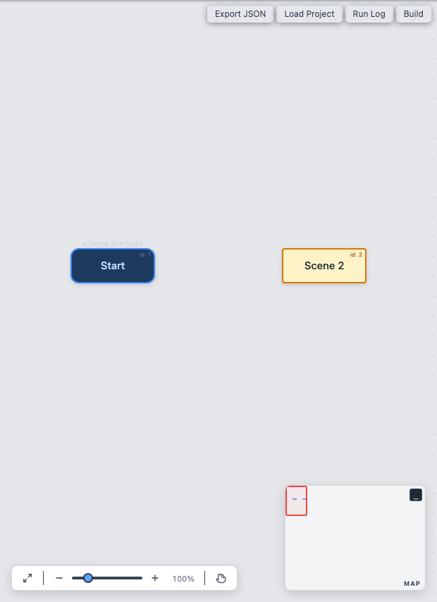
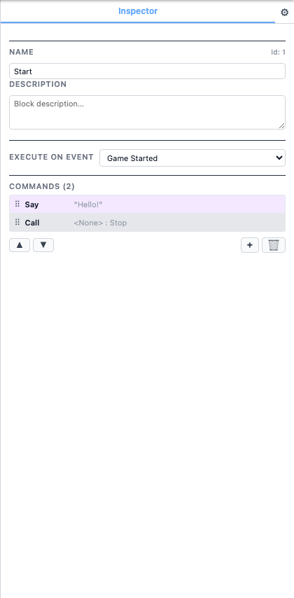

Blocks
A block is the fundamental container in Son of Fungus. Each block holds an ordered list of commands that execute from top to bottom when the block is reached during playback.

Block Types
Blocks are visually distinguished by colour and shape:
| Type | Appearance | Description |
|---|---|---|
| Event Block | Blue with rounded corners | Has an event trigger (e.g. Game Started). Execution can
begin here automatically. |
| Standard Block | Yellow | No event trigger. Reached only via a Call or Menu command from another block. |
| Branching Block | Yellow with multiple outgoing targets | Contains commands (Menu, If/Else) that branch to more than one target block. |
Event Triggers
An event block starts executing when its trigger condition is met. The available event triggers are:
Game Started— Fires once when playback begins. Every project should have at least one block with this event.Message Received— Fires when a matching message name is sent by a Send Message command or the events system.Key Pressed— Fires when the user presses a specific keyboard key during playback.
Block Name & Description
Every block has a name (shown as the block title on the canvas) and an optional description that appears below the name on the canvas card. Use descriptive names and short notes so your flowchart remains readable at a glance.
You can edit both fields in the Inspector when the block is selected.

Block ID
Each block is assigned a unique numeric ID when it is created. The ID is displayed as a small label at the top-right corner of the block card on the canvas. This ID is used internally by Call and Menu commands to reference target blocks, and it appears in the exported JSON data.